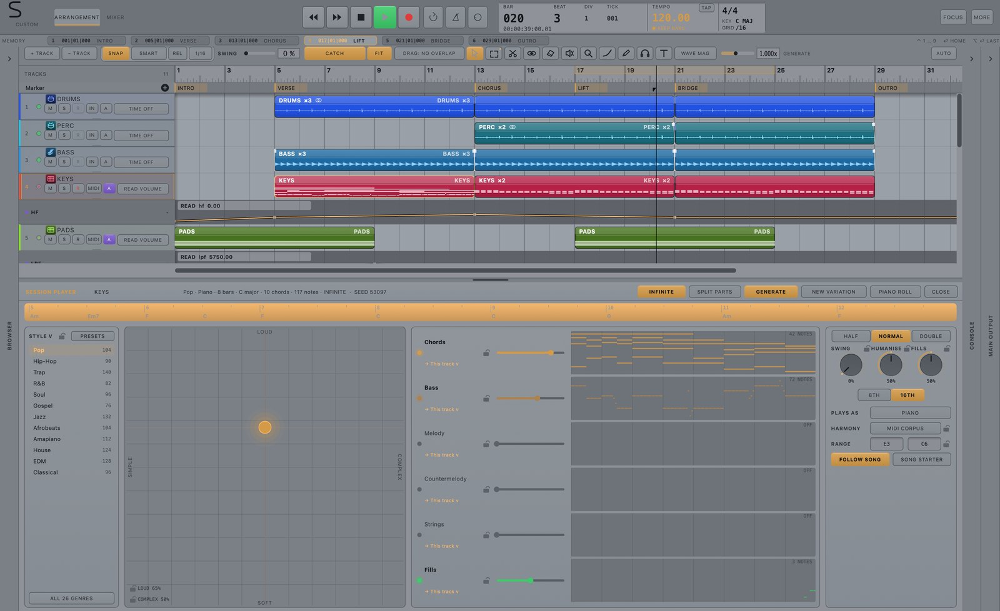
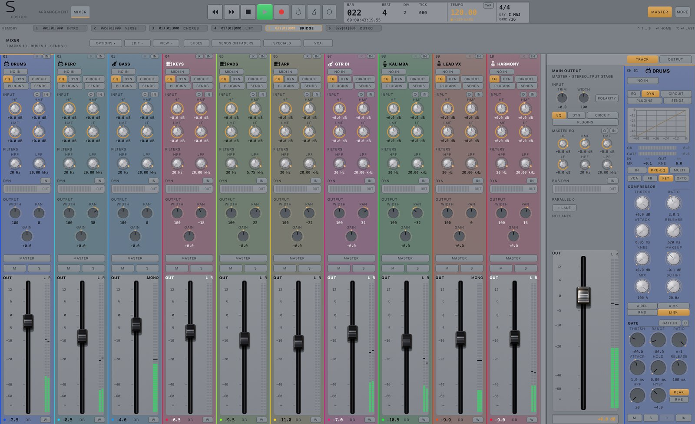

SIMLAF 2 · Digital Analog DAW
SIMLAF 2Your performance is only the beginning.
A recording studio. An instrument workshop. A console with character. Capture the moment, invent the sound and shape the record—from the first note to the final print.
In development · Planned for December 2026 · Engineered by H. Domboka

Play first. Keep the moment.
The idea does not wait
for the Record button.
Recover eligible audio and MIDI performances after the moment has passed. Build the take, comp the strongest phrases and move straight into the arrangement.
Retrospective audio and MIDI.
Takes, comping and overdub.
Arrangement, mix and print.
A console with character
Every channel deserves a console.
Sweep analogue-matched EQ. Shape dynamics. Put compression before or after the curve. Then introduce circuit colour across the sub, body and air of the sound. The console is part of how you create—not simply where you turn it down.
- Four-band console EQ and interactive spectrum
- Gate, four compressor characters and multiband dynamics
- Circuit colour, inserts, sends and aligned parallel paths

NGOMA · drum synthesis and arrangement
Build the sound. Grow the groove. Explode the mix.
Create the drum, write the pattern and place it in the song. Linked regions keep the kit connected; Make Unique gives one occurrence its own direction. Move from a shared instrument to individual mixer channels when the mix needs it.
- Physical drum synthesis, not only sample playback
- Density, accents, feel, answers and fills reshape the pattern
- Explode the kit into mixer children while retaining its shared engine

One kit. Separate mix decisions.
Explode NGOMA into mixer children for individual processing while preserving the shared kit render.

Session Player
Direct the accompaniment. Keep the notes.
Build chords, bass, melody, countermelody, strings and fills around the song. Guide the harmony, range, feel and intensity. Make a variation, split the parts across instruments, then rewrite any note yourself.
- Editable MIDI, not a fixed backing track
- Follow song context and lock the decisions you want to keep
- Separate part destinations and instrument ranges


ELASTIC · native time and pitch
The performance is recorded. The expression is still yours.
Move a note. Refine pitch centre, drift and vibrato. Shape formants, gain and timing inside the session. Stretch polyphonic material or work with transients while retaining the original performance for comparison.
- Note-level monophonic tuning and vocal editing
- Native voice and polyphonic time-stretch engines
- Retained originals, audition and undoable edits

The mix, in full view
Follow every decision through the record.
Build buses, sends, stacks and parallel paths. Work channel by channel or move a selected group together. Check the master, compare in mono and print the mix with monitoring controls kept outside the recording path.
- Sends on Faders, VCAs and selected-channel control
- Up to eight parallel lanes on supported bus/master paths
- Mix and routed-stem export


The two-rate engine
Work the session.
Stay with the performance.
Eligible playback tracks can render ahead in larger blocks while live work stays on the device side. Persistent workers, prepared audio and cached analysis organise the work around the next audio deadline.
Render eligible playback ahead.
Keep live work on its appropriate path.
See callback timing and routing latency.
The interface is part of the instrument.
A studio in your light.
Daylight, Midnight and Studio. Change the atmosphere without restarting. Shape the workspace with interface sizing, track colour, strip widths and recalled panel arrangements.
An open canvas. Clear contrast. The current default.
A darker atmosphere for focused sessions.

The original charcoal-and-amber studio surface.

Inside the workstation
Go deeper.
Recording, instruments, sound design, editing and finishing. Explore the working tools behind the creative possibilities.
01RecordingKeep the performance.
- Audio and MIDI recording on a shared timeline.
- Retrospective audio capture on eligible input tracks, with a configurable 10–300-second window.
- Retrospective MIDI capture for received instrument performances.
- Take folders, take selection, swipe comping and take-to-track workflows.
- MIDI overdub, replace and takes modes.
- Punch ranges, count-in and pre-roll.
- Input monitoring, live take waveforms and explicit record states.
- Interrupted-take recovery and recording integrity reporting.
02ConsoleEvery channel deserves a console.
- Input trim, polarity, high-pass and low-pass filtering.
- Four sweepable EQ bands with frequency and Q controls.
- Proportional-Q bells, resonant shelves and LF/HF shelf-or-bell choices.
- Analogue-matched console EQ and 12–48 dB/oct filter slopes.
- Interactive Console EQ window with measured spectrum.
- Gate, compressor and multiband dynamics.
- VCA, feedback, FET and opto compressor characters.
- Peak/RMS detection, sidechain filtering and stereo-link controls.
- Compression before or after EQ.
- Circuit colour, insert processing, width, pan/balance and output fader.
- Independent EQ and dynamics windows; linked editing across selected channels.
- Copy/paste channel processing settings.
03CircuitCharacter begins inside the channel.
- Four-band circuit-colour processing: sub, low, mid and air.
- Clean, transformer, tube, tape and op-amp model choices.
- Per-band drive and global colour shaping.
- Shared-supply interaction with envelope controls.
- Drive, trim and parallel mix controls.
- Smoothed control changes and explicit stage engagement.
04RoutingBuild the mix around the music.
- Audio, instrument, aux, summing-stack and folder-stack workflows.
- VCA groups and grouped channel adjustments.
- Pre- and post-fader inserts.
- Sends, buses and separate output destinations.
- Sends on Faders and mixer selection/filtering tools.
- Up to eight parallel lanes on supported bus/master paths.
- Parallel-lane blend, mute, solo and pre/post-insert taps.
- Latency compensation across supported processor and routing paths.
- Sidechain-key selection and feedback-loop protection.
05NGOMAThe beat is an instrument.
- Built-in physical drum synthesis: Modal, Mesh, Modal + Mesh, Log Drum and Particle engines.
- Editable material, excitation, shell/body, tuning and decay behaviour.
- Per-pad performance and velocity mappings.
- Patterns live in linked arrangement regions; Make Unique creates an independent occurrence.
- Per-sound cell lengths and rates, swing, rolls and expression.
- Groove DNA: timing, feel, accent, density, answer and fill.
- Density thins less-important hits or introduces quiet ghost activity around the core pattern.
- Verse, chorus and fill variations with repeatable seeds.
- Playable Fill, Build and Break region endings.
- Explode a kit into individual mixer children while retaining its shared kit engine.
- Per-sound processing and levels through normal mixer channels.
- Drag linked patterns or rendered audio into the arrangement.
06Session PlayerDirect the accompaniment. Keep the notes.
- Editable MIDI parts for chords, bass, melody, countermelody, strings and fills.
- Song tempo, meter, key changes and arrangement context.
- Style, harmony, voicing and instrument-range controls.
- Complexity, intensity, swing, humanisation and fills.
- Lock settings while generating a new variation.
- Route roles to existing or new instrument tracks.
- Split Parts for separate destinations.
- Edit generated notes in the piano roll.
- Save generation settings and routing with the region.
07InstrumentsInvent the source of the sound.
- EMBER: physical electric-piano mechanisms, pickups, amplification and space.
- CANTUS: six-operator phase-modulation and wavetable synthesis.
- LUMEN: additive resynthesis, partial shaping and four-source spectral morphing.
- GRAVIS: bass synthesis, targeted pitch envelopes and a bass-focused processing rack.
- MZIMU: excited resonant structures with coupled modal banks.
- CHIMERA: layers and cross-excitation between synthesis engines.
- THESAUROS: a playable sampler, loop and slice workshop.
- NGOMA: physical drum synthesis and pattern construction.
- Native instrument docks alongside the arrangement.
- Host additional Audio Unit and VST3 instruments.
08SamplingOne recording. An instrument you can play.
- Instrument, Loop and Slices sampler modes.
- Root/fine tuning, trim, reverse and sustain-loop editing.
- Loop boundaries, crossfades and amplitude-envelope shaping.
- Host/manual tempo, rhythmic grid and swing controls.
- Map browser slices or arrangement regions to playable keys.
- Show Source connects played notes to their sampled material.
- Filter contour, unison, detune, glide and modulation.
- Harmony, vowel, ring-modulation, rhythm and capture-hold controls.
- Sample state and mappings retained with the session.
09ELASTICThe expression is still yours.
- Native time-stretching and pitch-editing engines.
- Detected monophonic notes with a measured pitch trace.
- Note transposition, fine pitch and pitch-centre correction.
- Scale snap, drift and vibrato editing.
- Independent formant and per-note gain controls.
- Split/join notes and edit pitch curves.
- Timing edits, transient markers and warp anchors.
- Timing quantisation with division, strength and swing.
- Polyphonic time stretching with attack-aware processing.
- Retained originals, edited/original audition and undo/redo.
- Background analysis, cached results and targeted re-rendering.
- Smart Tempo analysis, performance tempo and project-conform workflows.
10ArrangementChange the song, not a hundred separate edits.
- Move, copy, split, trim, glue, slip, reverse and repeat regions.
- Marquee selections, grid-relative edits and sample/frame/tick snap choices.
- Clip gain, fades, crossfades and curve controls.
- Arrangement sections move with their regions, automation and markers.
- Insert, duplicate, replace, split or delete song sections.
- Tempo, signature, key and marker tracks.
- Tempo points, ramps and alternatives.
- Bounce in Place, Bounce and Join, and track commit.
- Undo History and grouped gestures.
11MIDIWrite it. Play it. Make it yours.
- Piano roll and step-grid editing.
- Note length, velocity, transpose and scale quantisation.
- Ghost-note views and editable region playback parameters.
- Virtual Keys and MIDI Panic.
- MIDI note/controller chase.
- Device and channel selection with pedal handling.
- Import/export MIDI and transpose-aware browser preview.
12AutomationPerform the mix.
- Off, Read, Touch, Latch, Write and Trim modes.
- Record supported strip-control moves while transport plays.
- Touch return, latch-to-stop and relative trim behaviour.
- Editable breakpoints and curves.
- Undoable automation passes and redundant-point thinning.
- Automation writing through supported hardware-surface controls.
13SpecialsGive the mix somewhere to go.
- 24 native send/parallel processors, distinct from the standalone FX Suite.
- Reverbs: Room, Plate, Hall, Chamber, Nonlin and Shimmer.
- Delays: Tape, Digital, Ping-Pong, Slap and Multitap.
- Modulation: Chorus, Flange and Phase.
- Parallel dynamics: Smash, Glue, Opto and Pump.
- Tone/colour: Colour, Air, Sub, Width, Telephone and Crush.
- Three macro controls per Special and recalled session state.
- Return strips remain part of normal bus routing and mixing.
14EngineEngineered around the next audio block.
- Device-driven audio clock at the selected sample rate and buffer size.
- Two-rate processing can render eligible playback tracks ahead in larger blocks.
- Live/armed tracks and defined dependencies remain on the live side.
- Persistent workers, prepared clip audio and reusable analysis.
- Disk-streaming/page caches and waveform peak caches.
- Driver-plus-route latency accounting and optional loopback calibration.
- Callback worst-time, peak deadline-use and timestamp-gap diagnostics.
- Separate optional LIVE PATH audio-input monitoring route.
- Out-of-process AU/VST3 scanning and explicit failed-plug-in states.
15FinishFollow the record to its final print.
- Master processing, loudness, true-peak and correlation metering.
- Monitor level, DIM and MONO after the print point.
- Offline and realtime mix export.
- Routed stem export, export ranges and audio tails.
- PCM and supported compressed-audio output formats.
- Sample-rate, bit-depth, dither and normalisation choices.
- Band-limited sample-rate conversion.
- Supported AAF and OMF 2.0 audio-session interchange.
- Movie playback, audio extraction and audio-to-movie export.
- Project frame rates, timecode and picture-locate workflows.
16WorkspaceA studio in your light.
- Daylight, Midnight and Studio themes, switchable without restarting.
- Daylight is the current default.
- Interface sizing and waveform-brightness controls.
- Track-colour treatments, intensity and strip-width choices.
- Editing, Sampling and Mixing workspace arrangements.
- Window Sets and recalled panel/editor sizes.
- Full Mixer, optional dock and floating views.
- Main-output destination following or master pinning.
- Hardware-inspired controls with actual engine readouts.
- Command palette, keyboard shortcuts, MIDI learn and MCU hardware-control integration.
No matching feature. Try another word or clear the search.
Development scope and practical details
- Development previews show actual SIMLAF 2 interfaces; the released version may differ.
- Polyphonic time stretching is supported; individual-note polyphonic pitch correction is not implied.
- The two-rate engine is a scheduling design, not a replacement hardware driver or a fixed-latency guarantee. LIVE PATH is a separate optional audio-input route that bypasses inserts, sends, buses and master processing for that input.
- Generated MIDI remains editable. Style coverage and musical results vary.
- Built-in instruments and separately sold products can have different versions and features. Company ownership does not imply that every separate SIMLAF product is bundled.
- Publishing and distribution services shown in development previews are not active. Hosted plug-in automation and compatibility depend on the supported path.
SIMLAF 2 is for macOS. Individual tools and processing modes have their own latency and system requirements. Previews demonstrate the development software, not a promise of final release availability.
SIMLAF 2
Make room for the music
you have not made yet.
Planned for December 2026. Explore the SIMLAF range while the studio takes shape.
Explore SIMLAFAutomatic sign-up is opening soon. You can request these updates by emailing us now.
Email for updatesOne email when SIMLAF 2 is released. See our privacy notice.